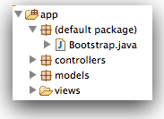

Introduce a 'Session' object to keep track of the currently logged in user. Use this Session object to be able to display the name of the logged in user on each page. Explore how this session can be used to further customise other aspects of the views
These are solutions to last weeks exercises:
We need to go back to our login form, which currently looks like this (excluding the header for clarity):
<section class="ui form segment">
<form action="/authenticate" method="POST">
<div class="field">
<label> Username: </label>
<input type="text" name="email">
</div>
<div class="field">
<label> Password: </label>
<input type="password" name="password">
</div>
<button class="ui blue submit button">Login</button>
</form>
</section>
Using step 5 as a guide, introduce the necessary changes to have the email/password transferred from this form to the controller, and logged to the console.
Change the authenticate method in Accounts class as follows:
public static void authenticate(String email, String password)
{
Logger.info("Attempting to authenticate with " + email + ":" + password);
Home.index();
}
Run the application, and veify that the logs display the message above.
What happens when you enter text and press 'Change' on the profile page? (Not found presumably). This is the html for that part of the page:
<form action="homeprofile/changetext" method="post">
<h3 class="ui inverted teal block header">Enter Status</h3>
<textarea class="ui field" name="profiletext"> </textarea>
<input class="ui blue button" type="submit" name="submit" value="Change" />
</form>
Again using step 5 of this lab as a guide, can you make the necessary changes such that when the Change button is pressed, a log message is printed on the console?
Remember, to implement complete this exercises you will need to write both a java method and a matching route - as demonstrated in step 5. Also. the 'action' attribute of the form above will need to be completed. Also, note the name on the <textarea> field.
First we correct the 'action' in the view, to use a more consistent pattern '/profile/changestatus"':
<form action="/profile/changestatus" method="post">
<h3 class="ui inverted teal block header">Enter Status</h3>
<textarea class="ui field" name="profiletext"> </textarea>
<input class="ui blue button" type="submit" name="submit" value="Change" />
</form>
Then we create a new entry in the routes file to specifically support this route:
POST /profile/changestatus Profile.changeStatus
Finally introduce this new method into the Profile controller:
public static void changeStatus(String profiletext)
{
Logger.info("Status changed to " + profiletext);
index();
}
Test this now.
Now we can have users sign up, the next step is to have them log in, and for our app to know who is logged in at any given time.
We will need to decide whether to allow a user to log in (they must register first), and subsequently 'remember' which user has logged in. This is accomplished as follows
To do this, rework the login as follows:
public static void authenticate(String email, String password)
{
Logger.info("Attempting to authenticate with " + email + ":" + password);
User user = User.findByEmail(email);
if ((user != null) && (user.checkPassword(password) == true))
{
Logger.info("Authentication successful");
session.put("logged_in_userid", user.id);
Home.index();
}
else
{
Logger.info("Authentication failed");
login();
}
}
Read this code carefully - notice we have two new methods we are calling on the user object:
These are currently not implement in User. Introduce them now into User model class:
public static User findByEmail(String email)
{
return find("email", email).first();
}
public boolean checkPassword(String password)
{
return this.password.equals(password);
}
Try this out now. If an unregistered email/password is entered then the login screen is displayed again. If valid credentials are provided, then we will get the home screen. Also check the console for the appropriate log messages.
Once a user is successfully logged in, we would like to display the user name in the title of some of the pages. Currently this is hard coded on some pages to "Homer Simpson" - views/index.html for instance:
<h2 class="ui header">SpaceBook: Homer's Home Page</h2>
We would like to have the name of the user passed on to the view so we can display it.
In Accounts.authenticate(), we put the currently logged in user id in the 'session':
session.put("logged_in_userid", user.id);
We can retrieve it now in the home.index method, and use the id to look up the user in the database. Once we have the user object, we retrieve the users name and pass this to the view. Rewrite the Home.index function as follows:
public static void index()
{
String userId = session.get("logged_in_userid");
User user = User.findById(Long.parseLong(userId));
String name = user.firstName;
render(name);
}
Read each line carefully - introduce it into your Home class. Now we can replace the hard coded:
<h2 class="ui header">SpaceBook: Homer's Home Page</h2>
with this:
<h2 class="ui header">SpaceBook: ${name}'s Home Page</h2>
Try this now. Sign up Homer, and verify that his name appears. Then sign up Marge her name should be on the home page instead.
We can do a similar exercise for the home profile page. This is how it is 'rendered':
public class Profile extends Controller
{
public static void index()
{
render();
}
}
We can incorporate the same code we used in the home class to get the currently logged in user name to the view:
public static void index()
{
String userId = session.get("logged_in_userid");
User user = User.findById(Long.parseLong(userId));
String name = user.firstName;
render(name);
}
...and also change 'views/Profile/index.html' from this:
<h2 class="ui header">Homer's Profile</h2>
to
<h2 class="ui header">${name}'s Profile</h2>
Save and reload the home profile page. The users name should appear.
Log out now and login as a different user (you may need to register a new one). Verify that the new user's name appears as expected in the titles of home and home profile views.
In the Home controller we have action methods like this:
public static void index()
{
String userId = session.get("logged_in_userid");
User user = User.findById(Long.parseLong(userId));
String name = user.firstName;
render(name);
}
and in the corresponding view/Home/index.html we have something this:
<h2 class="ui header">SpaceBook: ${name}'s Home Page</h2>
i.e. we are passing individual strings to the views. This can be significantly enhanced by passing entire objects to the view:
public static void index()
{
String userId = session.get("logged_in_userid");
User user = User.findById(Long.parseLong(userId));
render(user);
}
and
<h2 class="ui header">SpaceBook: Home page for ${user.firstName} ${user.lastName}</h2>
This, of course, means that other properties of the user object are also available if we need them.
You may need to restart the app - and register a new user - after making the above changes.
When the user logs out we no longer want to remember any details. We 'forget' the user be clearing the session.
Do this in the Accounts.logout method:
public static void logout()
{
session.clear();
index();
}
Try this now.
Change the Profile controller/view to display the currently logged in users full name (not just the first name).
In the user Profile view, see if you can figure out how to let the user see his/her email.
Start the application from scratch. Browse to the database administrator:
Use this user interface to create some users. Then see if you can log in with these users using the regular interface:
Use the MySqlWorkbench to do the same.
Currently, every time we stop the application our database is cleared - and when we run again we have to register new users again. This can get tiresome and repetitive. Our framework comes with a simple mechanism for pre-loading our database if we want to hit the ground running with initial test data.
Create a file called 'data.yml' in the conf directory in the project, and incorporate the following contents into it:
User(homer):
firstName: Homer
lastName: Simpson
email: homer@simpson.com
password: secret
User(marge):
firstName: Marge
lastName: Simpson
email: marge@simpson.com
password: secret
Now create a new java class called 'Bootstrap' - directly in the the 'app' folder in your eclipse project. The class is to contain the following:
import java.util.List;
import play.*;
import play.jobs.*;
import play.test.*;
import models.*;
@OnApplicationStart
public class Bootstrap extends Job
{
public void doJob()
{
if (User.count() == 0)
{
Fixtures.loadModels("data.yml");
}
}
}
This last step can be tricky - as you may get warnings from Eclipse saying it does not like classes in here (it prefers them in packages). If it works correctly, it will appear like this in your workspace:

Stop the application and start it again. Go directly to the database admin page
...and see if the users we specified are there. See if you can log in without registering.
Add a few more users and see if they appear as expected (you will have to stop and restart the application for this to take effect).